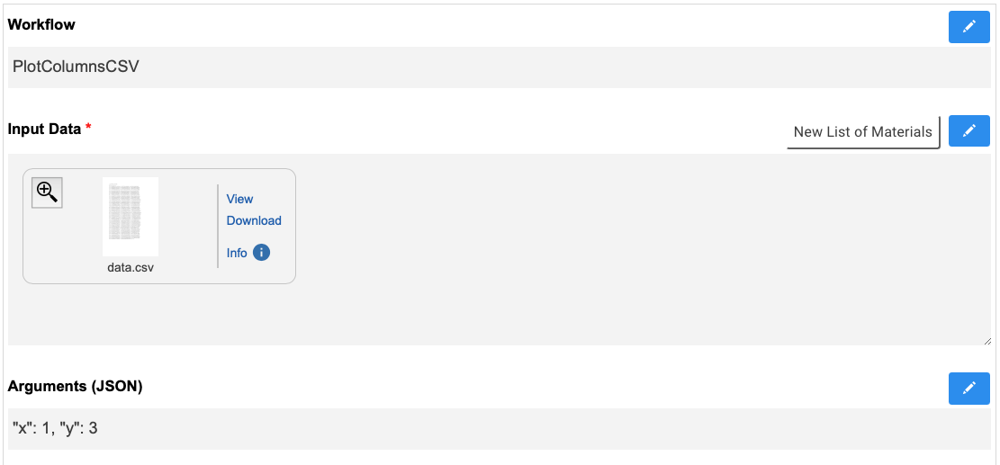
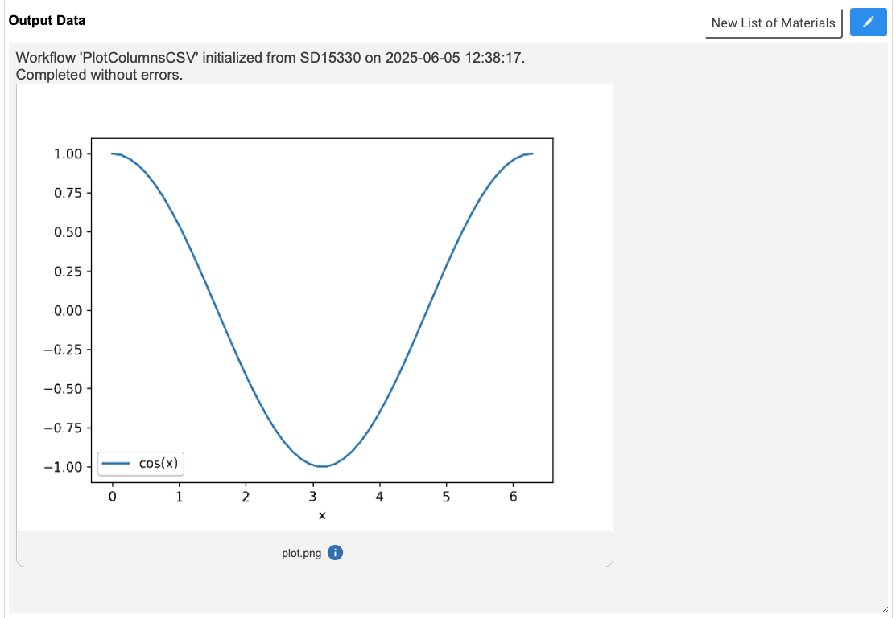

inm_rspace.workflow module¶
Examples¶
A fully outomated workflow that takes RSpace documents with attached CSV files and plots them:
The Input fields in the RSpace document look like this:
The automatically generated Output field looks like this:
The code for this example can be found here.
API documentation¶
- class inm_rspace.workflow.Workflow(document: dict, path='/home/runner')[source]¶
Bases:
object- define()[source]¶
Define the properties of the Workflow.
This function should be redefined for every subclass of Workflow.
- download_files(files)[source]¶
Download files from the Rspace Gallery into this workflow’s working directory.
- Parameters:
files (list<dict>) – List of Rspace file objects
- get_input_files()[source]¶
Check if all expected input files have been provided in the request. If yes, download them.
- prepare()[source]¶
Prepare for workflow execution:
check if request has already been completed
check if the requested workflow matches this one
create a working directory for the workflow
try to download files from the request
- reset_document()[source]¶
Reset the request document to an empty ‘output’ field and ‘completed’ field ‘no’.